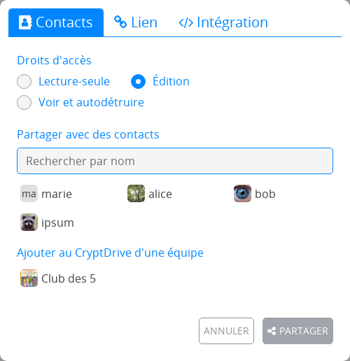
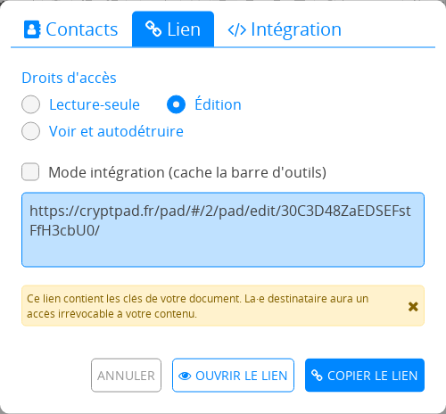
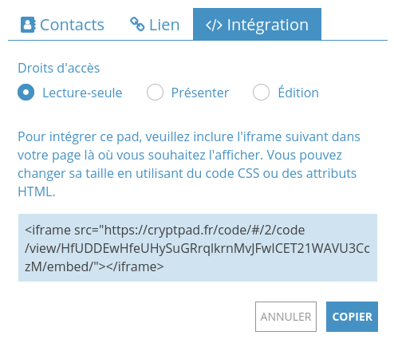
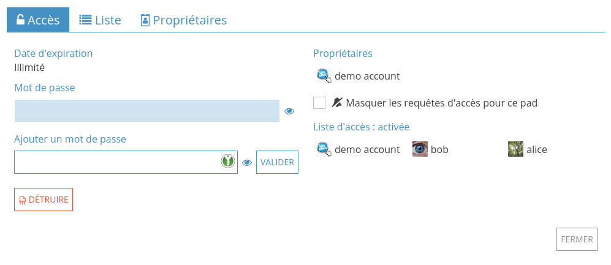
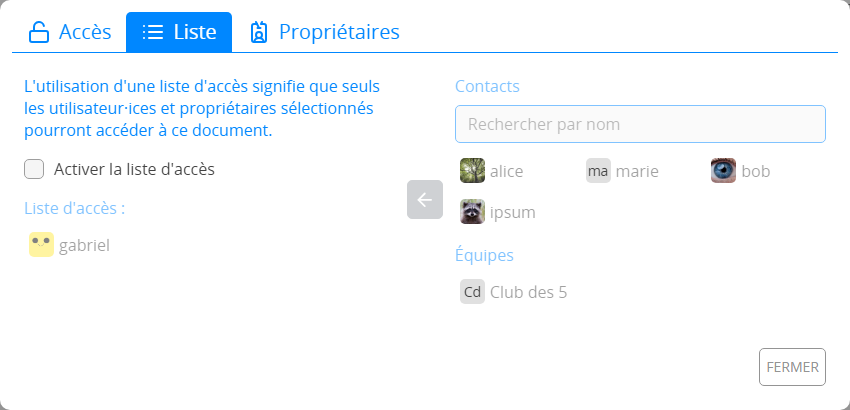
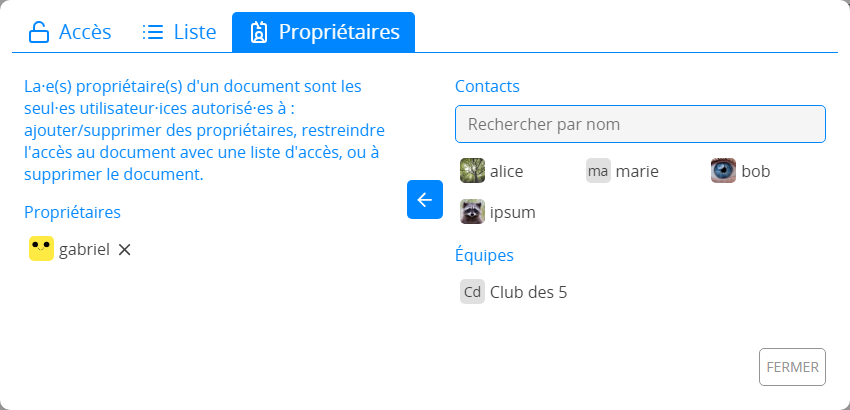

Partage / Accès#
Partager et Accès sont les deux menus pour gérer comment les autres utilisateur·ices peuvent interagir avec vos documents sur CryptPad.
Depuis la barre d'outils d'un document : Partager et Accès au centre.
Depuis le CryptDrive :
Clic droitsur un document > Partager ou Accès.
Partager#
Il existe 3 moyens de partager un document : Partager avec des contacts, Partager un lien, and Intégration . Dans tous ces cas, différents droits d'accès sont disponibles pour autoriser ou non les destinataires à modifier le document.
Droits d'accès#
Il y a 4 types de permissions :
Lecture-seule : Consulter le document sans le modifier.
Présentation : Consulter le rendu du document, disponible dans les applications Code / Markdown et Présentation.
Édition : Consulter et modifier le document.
Voir et autodétruire : Consulter le document en lecture seule et une seule fois. Le document est supprimé définitivement une fois ouvert par le destinataire. Logged in users
Note
Si un document est déjà stocké dans le CryptDrive d'un·e utilisateur·ice avec les droits d'édition, alors le "lien d'édition" est visible dans les propriétés du document même en lecture seule.
Partager avec des contacts#
Utilisateur·ices enregistré·es
Il est recommandé d'utiliser cette méthode pour partager vos documents. En partageant directement avec vos contacts les liens et les clés de chiffrement ne quittent pas la plateforme chiffrée de CryptPad. Cela garantit de ne pas donner l'accès à vos données à des services tiers.

Pour partager avec un·e/des contacts :
Partager dans la barre d'outils du document > Contacts.
Clic droitsur le document dans le CryptDrive > Partager > Contacts.
Puis :
Choisir les droits d'accès.
Sélectionner la·e/les contacts ou équipes.
Bouton Partager.
Note
Lorsque vous partagez avec des contacts, ils reçoivent une notification. Lorsque vous partagez avec une équipe, le document est ajouté directement au CryptDrive de l'équipe.
Partager un lien#
L'onglet Lien permet de partager des documents en envoyant un lien par le moyen de votre choix. En fonction du moyen de communication employé cette méthode de partage peut présenter des risques de sécurité. Pour ajouter un niveau de sécurité, il est recommandé d'ajouter un mot de passe à votre document avant de le partager.

Pour copier le lien d'un document :
Depuis le document : Partager dans la barre d'outils > Lien.
Depuis le CryptDrive :
Clic droitsur le document > Partager > Lien.
Puis :
Choisir les droits d'accès et les options additionnelles :
Mode intégration cache la barre d'outils CryptPad et la liste des utilisateur·ices connecté·es.
Aperçu permet de visualiser le lien avant de l'envoyer.
Copier le lien.
Envoyer le lien.
Intégration#
L'intégration permet d'inclure un document CryptPad sur une page web.

Pour inclure un document :
Depuis le document : Partager dans la barre d'outils > Intégration.
Depuis le CryptDrive :
Clic droitsur le document > Partager > Intégration.
puis
Choisir les droits d'accès.
Copier le code d'intégration.
Coller le code sur une page web.
Dossiers partagés#
Utilisateur·ices enregistré·es
Les dossiers partagés permettent de partager un ensemble de documents.
Avertissement
Shared folders are impacting the storage quota of everyone who has them in their drive. Hence, it's usage should be limited and ideally used only in last resort, when a team isn't fitting for the use case.
Pour créer un dossier partagé dans le CryptDrive :
+ Nouveau> Dossier partagé.Ctrl + e > Dossier partagé.
Clic droit> Nouveau dossier partagé.
Pour convertir un dossier existant en dossier partagé :
Clic droit> Partager.Choisir les options de conversion en dossier partagé. Mot de passe. Être propriétaire du dossier partagé.
OKou la touche Entrée.
Les dossiers sont partagés de manière similaire aux documents. Pour partager un dossier, depuis le CryptDrive :
Clic droit> Partager.Choisir les droits d'accès. Lecture-seule : Consulter le contenu du dossier sans le modifier. Édition : Consulter et modifier le contenu du dossier.
Trois onglets sont disponibles : Contacts : Méthode conseillée pour partager de manière sécurisée avec vos contacts et équipes CryptPad. Lien : Copier un lien à transmettre par le moyen de votre choix. Intégration : Copier le code pour inclure le dossier sur une page web.
Note
Les dossiers partagés ont leur propre historique, séparé de l'Historique. Restaurer l'historique du drive n'affecte pas les dossiers partagés, inversement l'historique d'un dossier partagé peut être restauré ou supprimé sans affecter le reste du drive.
Veuillez noter qu'une fois partagés, ils ne peuvent redevenir des dossiers normaux.
Accès#
Utilisateur·ices enregistré·es
Ce menu permet de restreindre l'accès à un document ou dossier partagé :
Depuis le document : Accès dans la barre d'outils.
Depuis le CryptDrive :
Clic droitsur le document ou dossier partagé > Accès.
Onglet Accès#

Cet onglet résume toutes les modalités d'accès au document :
Date d'expiration : Date de destruction du document. Cette date est réglée à la création du document et ne peut pas être modifié par la suite.
Mot de passe : Affiche si un mot de passe a été activé. Un nouveau mot de passe peut être activé, et un mot de passe existant peut être modifié.
Propriétaires : Liste de tou·tes les owners du document.
- Demander les droits d'édition :Demander les droits d'édition : Pour les utilisateur·ices en lecture seule.Masquer les requêtes d'accès pour ce pad : Bloque les requêtes de droits d'édition. Propriétaires du document
Liste d'accès : Affiche la access list et indique si elle est activée.
Détruire : Supprimer le document de manière permanente.
Liste#
Propriétaires du document

La liste d'accès permet de restreindre l'accès à un document. Une fois activée, les utilisateur·ices qui ne sont pas sur la liste n'ont pas accès au document, même si celui-ci est dans leur CryptDrive.
Pour activer la liste d'accès, cochez la case Activer la liste d'accès. Les propriétaires du document sont sur la liste par défaut et ne peuvent pas en être supprimés.
Pour ajouter d'autres utilisateur·ices ou équipes :
Les sélectionner dans la liste de contacts à droite du menu.
Les ajouter à la liste avec le bouton .
Pour supprimer un·e utilisateur·ice ou une équipe de la liste d'accès, utiliser le bouton à côté de leur nom.
Propriétaires#

Cet onglet est utilisé pour gérer les propriétaires du document. Les propriétaires ont les permissions suivantes :
Activer une liste d'accès.
Activer un mot de passe.
Ajouter ou supprimer d'autres propriétaires.
Détruire le document.
La propriété d'un document est établie lors de sa création.
Note
Si un document est créé sans propriétaire, personne n'a la permission de gérer sa propriété. Il ne peut pas être détruit de manière permanente, mais peut être supprimé du CryptDrive et est détruit automatiquement après 90 jours d'inactivité.
Propriétaires du document
Pour ajouter des propriétaires, utilisateur·ices ou équipes :
Les sélectionner dans la liste de contacts à droite du menu.
Les ajouter à la liste avec le bouton .
Pour supprimer un·e propriétaire, utiliser sur le bouton à côté de leur nom.